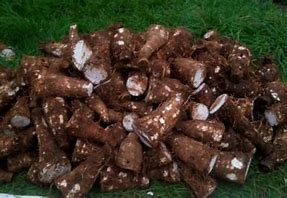
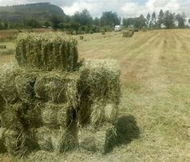

Explore Our Crops

Macadamia
Premium macadamia nuts known for their rich flavor and high nutritional value. Our macadamia farms use the latest organic farming techniques to ensure quality.

Arrowroots
Organically grown arrowroots packed with essential nutrients and harvested fresh. These are perfect for healthy and balanced meals.

Hay
High-quality hay produced to support animal feeding and farming needs, ensuring healthy livestock across various farms.